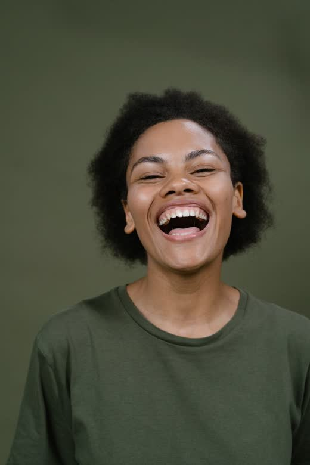
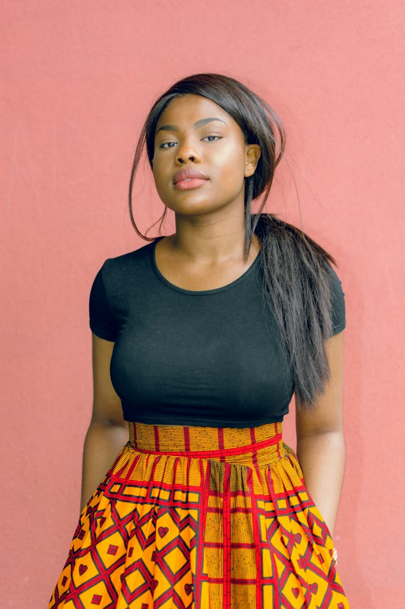

Rien n'est modifié. Votre remarque change l'architecture, et je la trouve meilleure : la chronique devient une « story » fabriquée dans le Studio de montage, comme les posts. Un seul système d'édition et un seul contrôle : musique, texte, autocollants, vidéo ou image épinglée, voix, carte de vente. Le formulaire à part (chroniqueform.dart, 1 379 lignes) disparaît. Cette proposition complète celle des chroniques (liste, lecture, aperçu), qui reste valable.


| Sujet | Proposition |
|---|---|
| Studio | Un mode « chronique » du Studio : format story 9:16, même éditeur, même export serveur (POST /studio/montages). Le bouton « Aperçu → » remplace « Suivant ». |
| Publication | Le film exporté est publié par le point d'accès des chroniques existant (POST /chronicles, avec le film en média). Aucune nouvelle logique de durée ni de coût. |
| Carte de vente | Colonne commerce (JSON : produit, prix, WhatsApp, téléphone, lien) sur les chroniques, avec la même validation que la carte Commerce des posts ; le serveur renvoie la carte à la lecture. |
| Épinglage | La vidéo ou l'image épinglée est intégrée au film à l'export (comme pour les vidéos des posts). Rendre l'épingle cliquable vers l'original, comme sur les posts, demande une colonne de plus : je le propose en deuxième temps. |
| Chronique texte | Elle aussi passe par le Studio (modèles de fond coloré) : plus de formulaire à part. |
| Anciennes chroniques | Inchangées (elles expirent en 24 h) ; l'ancien formulaire est retiré une fois le Studio en place. |
| Chronique business | Ouverte à toute personne qui a une boutique (entreprise) dans Afrolook ; sinon le lien externe reste possible mais la carte porte la mention « lien externe ». |
Rappel : les écrans de lecture, de liste et d'aperçu sont dans la proposition précédente (chroniques_proposition_autonome.html).